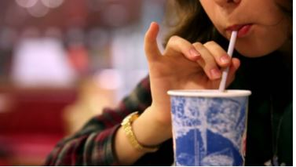

March 26, 2018
The Last Straw

Americans use an average of 1.6 straws per day. In the U.S. alone, that adds up to 500 million plastic straws that are thrown out each day. That’s a lot of plastic, much of which ends up as litter on our streets and in our waters. And plastic straws are made from oil. It seems like a pretty frivolous use for such an important resource!
Today, more and more people are saying “no thank you” to plastic straws and drink stirrers. Communities in Vermont and Washington are taking small steps that add up to cleaner streets, healthier communities.
You can help too. When in a restaurant, let your server know that you don’t want a straw. If you’re a student, work with your school to find ways to reduce straws in the lunchroom. Or, take a lesson from Milo Cress who, in 2011 when he was 9 years old, asked restaurants in his community to stop automatically including straws with drinks. Like Finley, he made a difference!
Read more about Milo, and other steps you can take to ditch the plastic straw. https://www.cnn.com/2018/01/14/world/plastic-straws-ban-campaigns/index.html